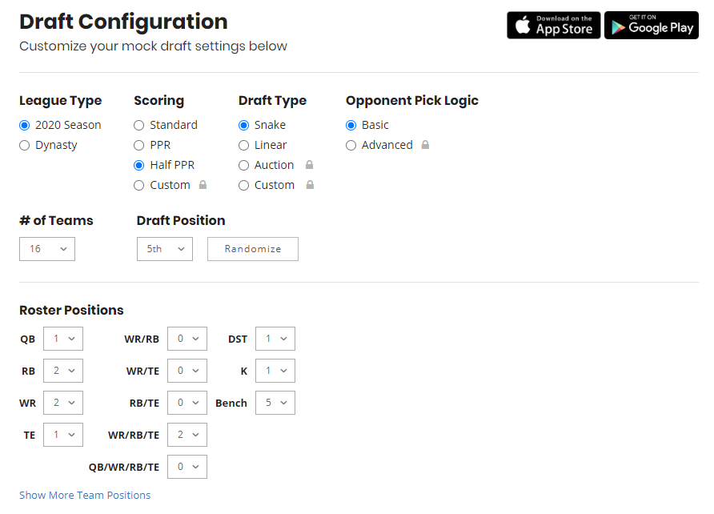

- 1x Quarterback (QB)
- 2x Running backs (RB)
- 2x Wide Receivers (WR)
- 1x Tight End (TE)
- 2x Flex (RB / WR / TE)
- 1x Kicker (K)
- 1x Defense / Special Team (DST)
- 5x Bench (BN)
- 1x Injured Reserve (IR)

…but what about the Flex position?


You play the defense and special teams for an entire team.
This position can be filled by a player who is injured, or is listed as out. The player can stay there as long as they are not eligible to play.
Each round of a draft, every person picks a player from the pool.
There are 15 rounds.
Every round the order reverses.
The last person to pick from a round, picks first in the following round.
This is called a snake draft.

Place emphasis on skill positions (RB, WR).
Try to be patient on QB.
Be most patient on K and DST.
Draft for upside in the later rounds.
You don't need backups for every position (esp. K, DST).
Don't draft players you really dislike.
Especially after you just drafted the most awesome team?
Players get hurt, underperform, or a better player becomes available.
Fill holes in your roster for bye weeks.
Waiver wire
Trade
The waiver wire is the pool of all the players who aren't on a team.

These players are free agents.
So how does the waiver wire work?
Temporary freeze on unclaimed players,
giving everyone a chance to make a claim.
When waiver period ends, all claims are processed.
If two claims are for the same player, claim with highest waiver priority wins.
Waiver priority resets each week to inverse of standings. Last place player has highest priority.
Free agents can be added at will, first come, first serve.
Runs from Wednesday morning until the beginning of the Sunday games.
Weaknesses of your team.
What you're willing to trade.
Weaknesses of other teams.
Make offers to multiple teams.
Try to be equitable.
Don't trade like for like.
Quarterback
| Points | Action |
|---|---|
| 1 | 25 passing yards |
| 1 | 10 rushing yards |
| 2 | 2 point conversion |
| 4 | touchdown |
| -1 | interception |
Running Back / Wide Receiver / Tight End
| Points | Action |
|---|---|
| 0.5 | 1 reception (caught pass) |
| 1 | 10 receiving yards |
| 2 | 2 point conversion |
| 1 | 10 rushing yards |
| 6 | touchdown |
Kicker
| Points | Action |
|---|---|
| 3 | field goal (0 - 39 yards) |
| 4 | field goal (40 - 49 yards) |
| 5 | field goal (50+ yards) |
| 1 | made point after attempt |
| -1 | missed field goal |
Defense
Starts at 10 points, as other team scores this decreases.
| Points | Action |
|---|---|
| 1 | sack |
| 1 | forced fumble |
| 2 | interception |
| 2 | fumble recovery |
| 2 | blocked kick |
| 2 | safety |
| 6 | touchdown |
Special Teams
| Points | Action |
|---|---|
| 1 | forced fumble |
| 1 | fumble recovery |
| 6 | touchdown |
Offensive Fumbling
| Points | Action |
|---|---|
| -1 | fumble |
| -2 | lost fumble |

You can run them right from the Sleeper app.
Experiment with your position in the pick order.
Use the same settings as our league (16 teams, half PPR, etc.)
FantasyPros.com mock draft simulator

- ADP - average draft pick, usual point a player is picked in a draft.
- Waiver wire - pool of available players.
- Half PPR - 0.5 points per reception scoring system.
- Streaming - using a player in place of a normal starter for the week.
- Handcuff - backup to a starter, usually used with backup RB on a RB friendly team.
- Stack - Starting a QB and WR (or TE) from the same team.